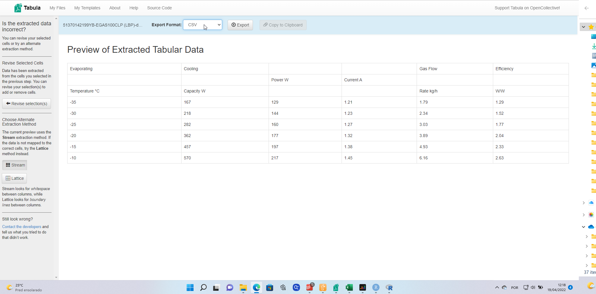
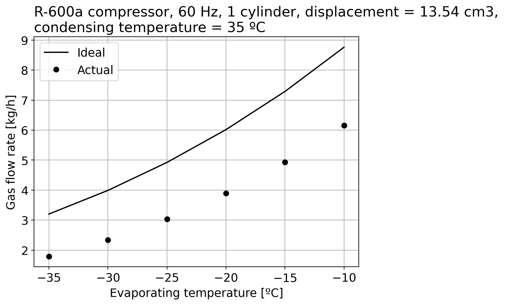
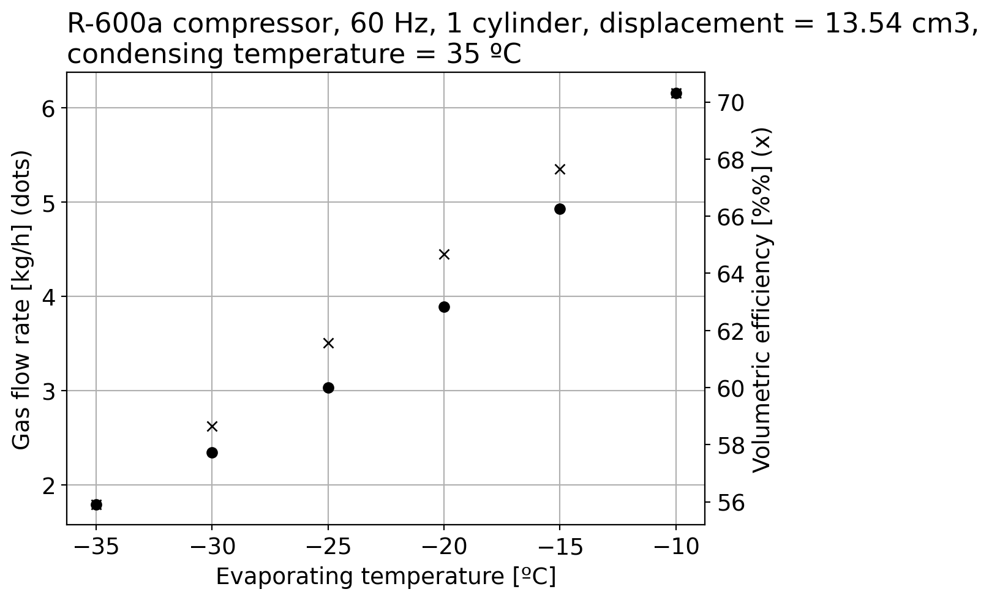

Exploring and regressing data from a compressor datasheet with Python
Articles
Author
Fábio P. Fortkamp
Published
April 19, 2022
When selecting a compressor for a refrigeration system, the engineer usually has to browse through datasheets to select the most appropriate machine. The user must select a compressor that works with the selected refrigerant (chosen for environmental and cost reasons) and is able to deliver the required cooling capacity when operating between evaporating and condensing temperatures; these are linked to the cold and hot source temperatures (that is, the low temperature that is to maintained and the hot ambient temperature over which we have no control) through heat exchangers, but for this text we will ignore that and assume ideal heat exchangers.
Here is one example of a compressor datasheet that we will explore in this post. The main data is presented in tables of various metrics as a function of evaporating temperature, and we have one table for each condensing temperature like this:
Compressor datasheet
This must be converted to a text format. After a recomendation from Dr. Drang, I often use Tabula: this app allows you to upload PDFs and extract a text table from it:

Tabula
The result can be downloaded as a CSV and cleaned up; it is also useful to explicitly include the condensing temperature as a column, in the case we want to generalize the results of this post to other temperatures:
How to calculate the mass flow rate of a compressor?
A reciprocating compressor like this one is a volumetric machine: it displaces a certain volume of fluid, based on its internal geometry, and the mass flow rate depends on the suction state.
where the numerator is the displacement rate; for a compressor with \(z\) cylinders at a fixed rotation speed \(n\) it can be calculated
\[
\dot{\mathcal{V}} _{\mathrm{D}} = {\mathcal{V}} _{\mathrm{D}} n z
\]
where \(\mathcal{V} _{\mathrm{D}}\) is the internal displacement.
Let’s plot the actual mass flow rate from the datasheet (using the geometric parameters from it) and the above model to compare:
import matplotlib.pyplot as pltfrom CoolProp.CoolProp import PropsSIimport numpy as npplt.rc('font', size=14)Vd =13.54e-6# in m3n =60#Hzz =1fluid ='R600a'Vd_dot = Vd * n * z # m3/sT_evap = df["Evaporating Temperature [C]"].valuesm_dot_actual = df["Gas Flow Rate [kg/h]"].values# we take the inverse of the density # of saturated vapor (quality = 1)# at each value of evaporating temperature# not forgetting to convert to K for CoolPropv_in = np.array([(1.0/PropsSI("D","T",Te +273,"Q",1,fluid)) for Te in T_evap])m_dot_ideal =3600*Vd_dot/v_infig, ax = plt.subplots()ax.plot(T_evap,m_dot_ideal,'k-',label="Ideal")ax.plot(T_evap,m_dot_actual,'ko',label="Actual")ax.set_xlabel("Evaporating temperature [ºC]")ax.set_ylabel("Gas flow rate [kg/h]")ax.set_title("""R-600a compressor, 60 Hz, 1 cylinder, displacement = %.2f cm3, condensing temperature = %d ºC"""%(Vd*1e6, df["Condensing temperature [C]"].values[0]),loc='left')ax.legend()ax.grid()plt.show()

Clearly our model is not good enough! There is a volumetric efficiency that is influenced by dead volumes and leakages:
eta_v = m_dot_actual/m_dot_ideal*100fig2, ax2 = plt.subplots()ax2.plot(T_evap,m_dot_actual,'ko',label="Actual mass flow rate")ax2.set_xlabel("Evaporating temperature [ºC]")ax2.set_ylabel("Gas flow rate [kg/h] (dots)")ax2.set_title("""R-600a compressor, 60 Hz, 1 cylinder, displacement = %.2f cm3, condensing temperature = %d ºC"""%(Vd*1e6, df["Condensing temperature [C]"].values[0]),loc='left')ax3 = ax2.twinx()ax3.plot(T_evap,eta_v,'kx',label="Volumetric efficiency")ax3.set_ylabel("Volumetric efficiency [%%] (x)")ax2.grid()plt.show()

Polynomials for cooling capacity
The other useful thing to do with a compressor datasheet of calculating a polynomial of the form [1]:
\[
\dot{Q} _{\mathrm{L}} = a _0 + a _1 t _{\mathrm{evap}} + a _2 t _{\mathrm{evap}}^2
\]
where \(\dot{Q}_{\mathrm{L}}\) is the cooling capacity and \(t_{\mathrm{evap}}\) is the evaporating temperature in degress Celsius. Three points of note:
This polynomial allows you to interpolate in different points other than the tabulated ones, an also can be combined with other models in the refrigeration system;
The coefficients themselves are function of the condensing temperature, the fluid properties and the compressor geometry;
The same thing can be done for the power consumption, with different coefficients.
We will use scikit-learn to train a model to calculate the coefficients, based on 50% of the data selected at random:
Hence, this polynomial seems to work fine, even though we have very few data points; with more data points in a test apparatus, this same model could be retrained, making the coefficients more and more accurate.
The advantage of this approach is that, if we are working with this compressor and selecting heat exchangers sizes, for instance, we do not need to evaluate thermophysical properties at each iteration but only a polynomial, which is a huge time saver. How to make this integration between models is the subject of another post.
UPDATE: there’s a follow-up post which corrects some mistakes that you should read now.
References
[1]: Stoecker, W. F. Design of thermal systems. [sl]: McGraw-Hill, 1980.